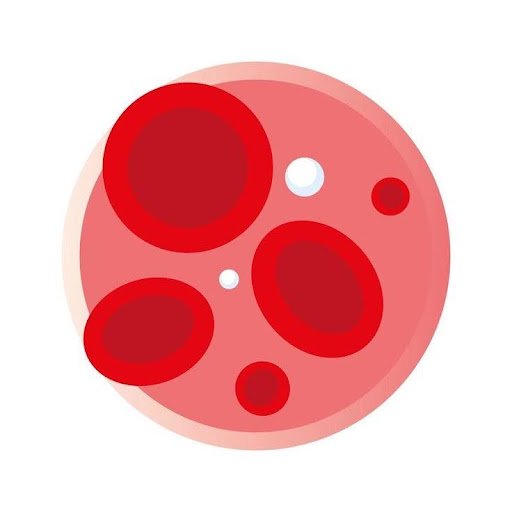
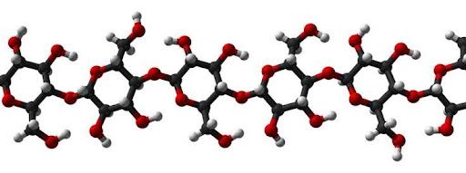
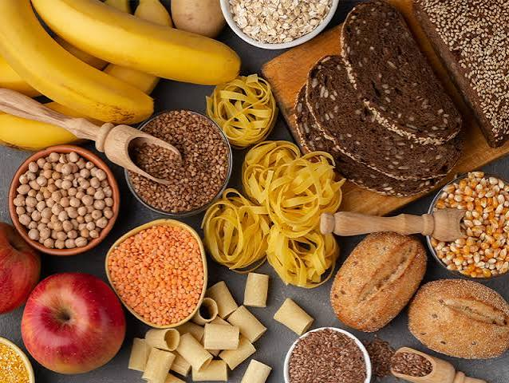

Carboidrato Simples e Complexo
Os carboidratos simples são compostos de apenas uma ou duas unidades de açúcar. São digeridos rapidamente, acarretando em uma súbita “explosão” de energia que pode vir acompanhada por fadiga quando essa energia se esgota. Já os carboidratos complexos são compostos por várias unidades de açúcar. Por este motivo, são digeridos mais lentamente, fornecendo uma liberação mais baixa e constante de glicose na corrente sanguínea.
Monossacarídeos
São carboidratos constituídos por aldoses, que possuem o grupo aldeído (-CHO) na cadeia, e cetoses, que possuem o grupo funcional cetona (C=O). De acordo com o número de carbonos, os monossacarídeos são classificados em trioses (3C), tetroses (4C), pentoses (5C), hexoses (6C) e heptoses (7C).
Dissacarídeos
Os dissacarídeos são carboidratos formados pela combinação de dois monossacarídeos através de uma ligação glicosídica. Estes compostos orgânicos são formados por moléculas de carbono, hidrogênio e oxigênio. Suas principais características são o sabor doce e a solubilidade em água e, por isso, são muito utilizados como adoçantes.
Polissacarídeos
Os polissacarídeos são vários monossacarídeos unidos por ligações glicosídicas em uma longa cadeia polimérica. Os três polissacarídeos acima são polímeros que possuem fórmula molecular (C6H10O6)n, pois são formados pela união de várias moléculas de glicose.
Exemplos e suas utilizações

Glicose
Fornecimento de energia: Os seres humanos obtêm energia através da alimentação. Quando ingerido, o carboidrato é decomposto por enzimas específicas em unidades menores de açúcares até que se produza a glicose.

Celulose
Estruturação Celular: A celulose faz com que as células dos vegetais possuam uma estrutura fixa, que é responsável pela proteção, sustentação e resistência. Esse carboidrato também regula o acesso de água na célula e a interação entre células vizinhas.
Excesso de carboidratos x carência de carboidratos

O excesso de carboidratos na alimentação, principalmente os refinados, são decompostos pelas enzimas no intestino e transformados em glicose rapidamente. Isso pode se transformar em um ciclo vicioso no organismo, pois é estimulada a produção de insulina devido à elevação da quantidade de açúcar no sangue. A insulina, por sua vez, diminui o nível de glicose no sangue de forma rápida, o que pode gerar sensação de fraqueza e ainda mais fome. Por outro lado, a carência de carboidratos no organismo faz com que a gordura corporal passe a ser utilizada como fonte de energia. Entretanto, o carboidrato é importante no processo de queima de gordura e, sem ele, o processo é incompleto, fazendo com que haja a formação de toxinas que podem acarretar, por exemplo, na diminuição do pH do sangue e desidratação.